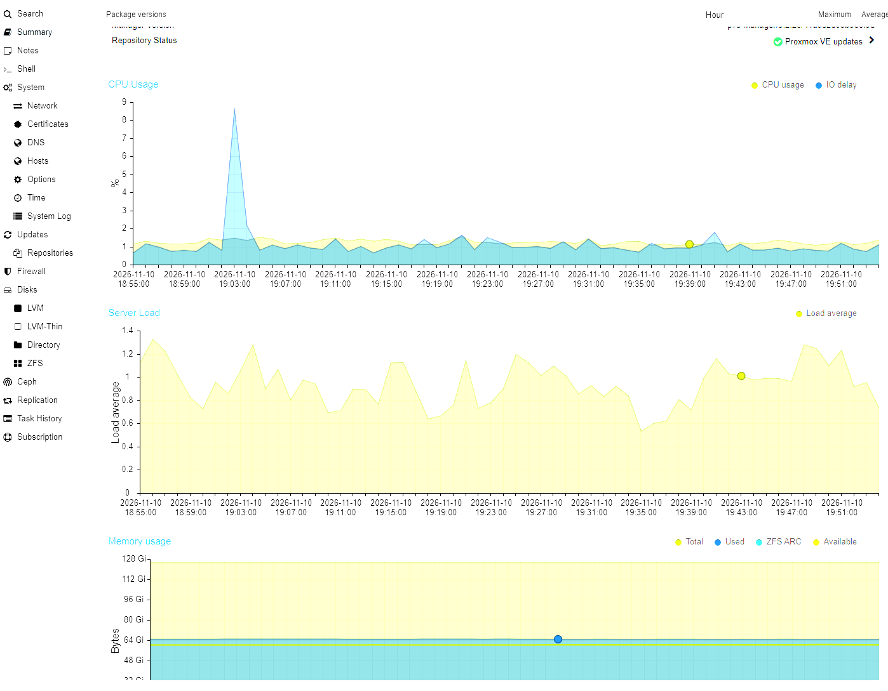

 centralcomms.nz
centralcomms.nzHAMILTON & WAIKATO
Websites that work.
Hosted here in NZ.
Web design. WordPress. NZ hosting.
Waikato servers. Western Bay of Plenty backups.
Local Hamilton support · 24/7 emergency assistance

centralcomms.nzHAMILTON & WAIKATO
Web design. WordPress. NZ hosting.
Waikato servers. Western Bay of Plenty backups.
Local Hamilton support · 24/7 emergency assistance